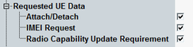

The parameters in this section specify which information is requested from the UE and whether registration is performed or not.
This section is not relevant for reduced signaling.

Enable or disable the CS registration and PS attach procedure. If disabled, the UE listens to paging messages when it has detected the UTRAN cell simulated by the instrument.
Disabling the registration requires the default IMSI to be set properly, see "Default IMSI". UEs that are configured to always attach to the packet switched domain, ignore the setting "Attach/Detach" = disabled.
Remote command:Enable or disable the request of the international mobile station equipment identity (IMEI) from the UE. A received IMEI is displayed in the main view.
An IMEI request is also possible for connections without previous UE registration. If the IMEI request is enabled when a connection to a non-registered UE is established, the instrument sends an identity request. The result is displayed after a delay caused by the exchange of signaling messages. A signaled IMEI is deleted after the connection is released and the instrument has reached the signal on state, because no assignment to the DUT is possible any more.
Remote command:Enable or disable the request of the radio capability update from the UE.
The UE capabilities are displayed in the main view, see "UE Capabilities".
Remote command: